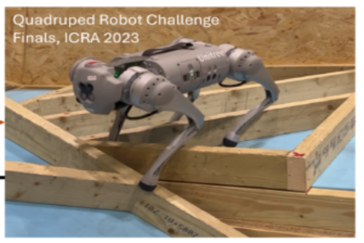
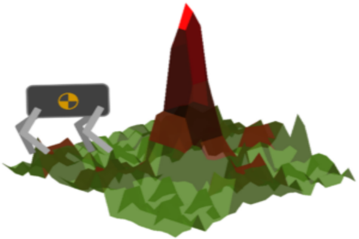

Off-road Autonomy and Robotics
This research focuses on developing a systematic data-driven analytical and computational framework for the navigation of autonomous vehicles in the off-road environment.
The data-driven tools are based on linear operator theory involving Koopman and Perron-Frobenius operators.
The developed framework is tested on an experimental platform consisting of an F1TENTH vehicle, 1/5th scale Hunter SE. We are currently implementing the framework for
full-scale Warthog and MRZR vehicles. The linear operator theoretical framework is also being applied to the autonomous control of quadruped robots.
The operator’s theoretical tools are used to solve the planning problems with safety constraints and real-time control problems.



One of our main contributions includes the analytical construction of density functions for safe navigation in static and dynamic environments, which consist of dynamically changing unsafe sets and targets.The density function is based on the occupancy-based physical interpretation of safety constructed using linear operator theory. The control problem is solved using Koopman-based Model Predictive Control, where we proposed using a parameterized family of switched Koopman models that can adapt to changing terrain properties and environmental conditions.